Decision Trees
Continuing our path into non-parametric methods, the decision tree is one of the most popular ML algorithms. Its popularity stems also from yet another attribute that is becoming very important in the application of ML/AI in mission critical industries such as health: its ability to offer interpretable results and be visualized easily.
Note: The material below is due to (a) “ML with Random Forests and Decision Trees” by Scott Hartshorn, (b) Decision Forests for Classification, Regression, Density Estimation, Manifold Learning and Semi-Supervised Learning by Criminisi et.a.l.
Introduction
A Decision Tree is simply a step by step process to go through to decide a category something belongs to - in the case of classification. They are non-parametric models because they dont use a predetermined set of parameters as in parametric models - rather the tree fits the data very closely and often overfits using as many parameters are required during training.
For example, let’s say that you had a basket of fruit in front of you, and you were trying to teach someone who had never seen these types of fruit before how to tell them apart. How could you do it? The answer is shown pictorially below.
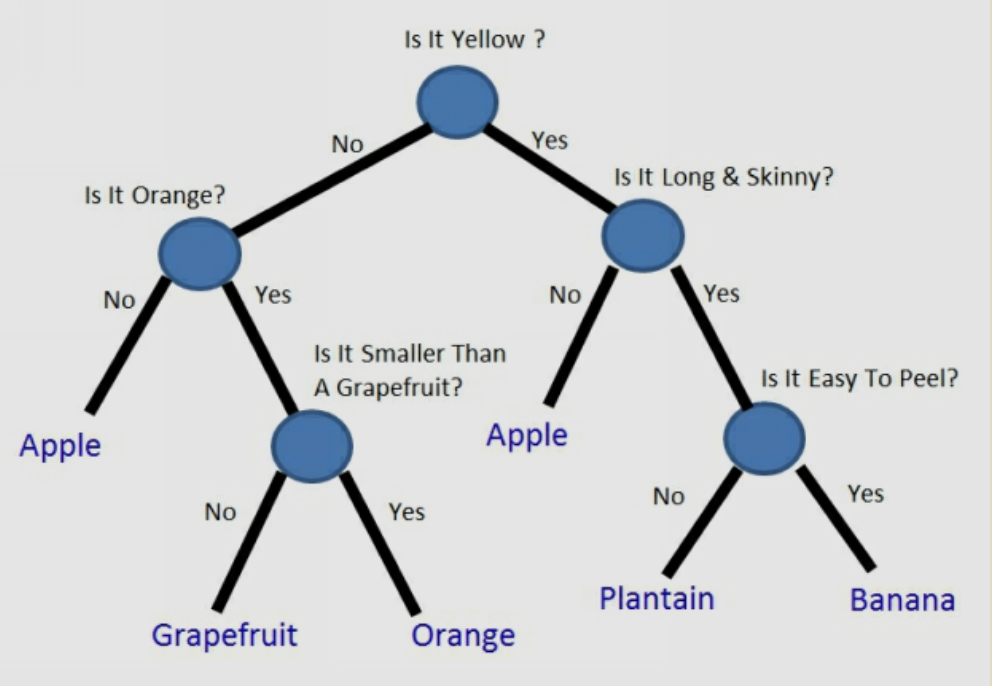
A decision tree is a tree where each node represents a feature(attribute), each link(branch) represents a decision(rule) and each leaf represents an outcome(categorical or continues value).
If your decision tree is good, you can now pick up an unknown piece of fruit and follow the flow chart to classify it. If your decision tree is bad, you can go down the wrong path and put something in the wrong category. For instance, if you didn’t know yellow apples existed when you built your decision tree, you might have assumed that all yellow fruit are either bananas or plantains.
In what follows, we focus on a dataset with $m=88$ and 4 labels: Apples, Oranges, Bananas, Grapefruit. Each example has multiple features: color, width and length.
| Fruit | Colors |
|---|---|
| Apples | Red, Green, or Yellow |
| Oranges | Orange |
| Bananas | Yellow or Green |
| Grapefruit | Orange or Yellow |
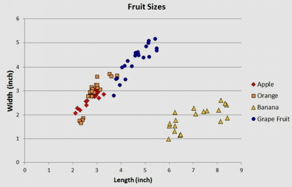 Fruit Dataset
If we are to draw separation lines on feature space of length ($x_1$) and width ($x_2$) without using an ML algorithm but by hand, we probably would come up with the picture below.
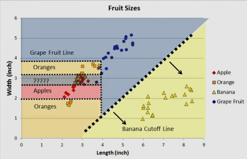 Draw by hand partition
Now, lets try to solve the same problem using an algorithm bearing in mind that many real-life data sets might have dozens or hundreds of different features.
CART algorithm
One of the most popular algorithms that implement decision trees is the Classification and Regression Tree (CART) algorithm.
NOTE: scikit-learn uses an optimised version of the CART algorithm; however, scikit-learn implementation does not support categorical variables for now.
At its heart, the algorithm implements a recursive binary partitioning of the input feature space. The feature space in the example above is $\mathbf{x} = (x_1, x_2, x_3)^T$ denoting length, width and color. Given a training dataset as usual $D={(\mathbf x_i, y_i}$ for $i={1, \dots m}$, we need to come up with an close to optimal partitioning for the generalization error.
We start at a root node that corresponds to the whole feature space (no partition) and design a test that is in its simplest form a conditional statement against a feature (a comparison if you like). Depending on the binary outcome of the test (either the input examples will satisfy the condition or not) we produce the corresponding child nodes each inheriting a subset of the input population and we repeat the exercise. The recursion stops when we reach the so called leaf nodes e.g. when the remaining examples in these nodes cannot be split further. We will come back at this terminal / leaf nodes later. An example tree and corresponding partition is shown in the two figures below.
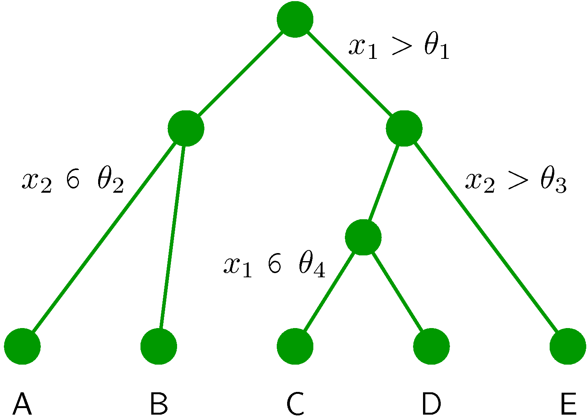 Example tree
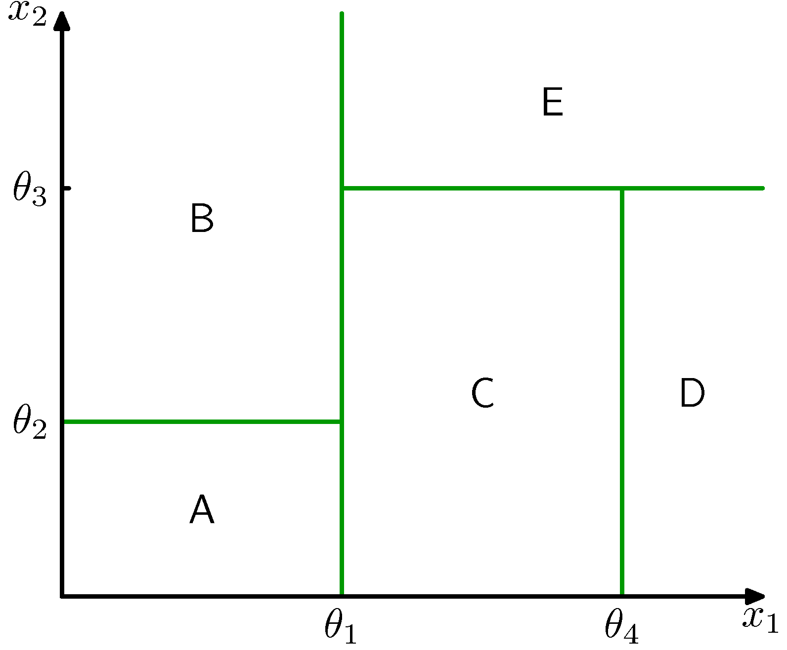 Partition for the example tree
The test specification consists of the variables $\theta_i$ that are are also called thresholds as well as the specific feature $x_k$ that is being selected for the test.
NOTE: Mind you that its not the example $\mathbf x$ that is part of the test spec - its the feature.
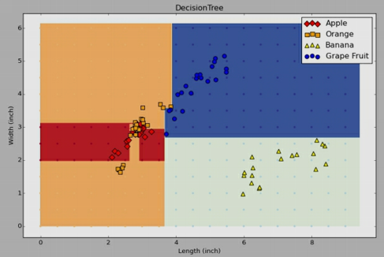 Final decision tree for the fruit classification problem
Lets see the three recursions of the algorithm as shown below.
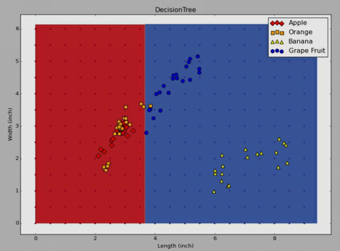 First split
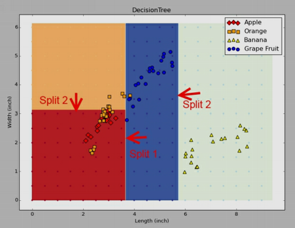 Second split
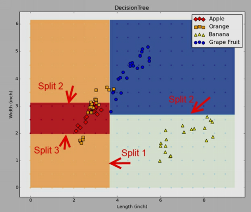 Third split
This brings up the question of how we select the test spec parameters $x_k$ and $\theta_k$ to minimize a certain metric that is dependent on the type of the problem we deal with - classification or regression.
Selecting the feature $x_k$ to split
To gauge which feature we will choose split requires a review of certain probabilistic concepts namely the concept of entropy. We can develop on top of entropy the concept of information gain that is pictorially explained using an example as shown below
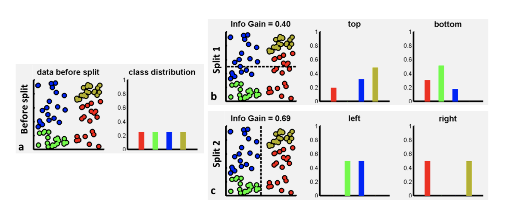 Information gain for two possible splits
The input dataset in this example has uniform distribution over classes - we have exactly the same number of points in each class. If we split the data horizontally (select feature $x_1$) this produces two sets of data. Each set is associated with a lower entropy (higher information, peakier class histograms) that is defined as usual
$$H(D) = − \sum_{c \in C} p( c ) \log(p( c ))$$
The entropy drops after any resonable split as we exclude labels from the original set and end up with more homogenous sets of labels. The gain of information achieved by splitting the data into two parts (1 / 2 or left / right) is computed as
$$IG = H(D) − L(x_k, \theta_k)$$
$$ = H(D) - \sum_{j \in {1,2}} \frac{|D^j|}{|D|} H(D^j)$$
where $|.|$ is the cardinality operator i.e. the number of elements in the corresponding set and $L$ is the loss function that the algorithm is searching for its minima by trying $(x_k, \theta_k)$ pairs. Apart from entropy we can also use another measure of impurity of the labels of the corresponding set - the Gini impurity measure. You are expected to understand the Entropy measure as it is used in other algorithms that we cover in this course. In programming, if you use sklearn, you need to explicitly change the default Gini measure to entropy.
Inference
Training will result into the heuristically optimal decision tree. Inference is then straightforward as the input data will trasverse the tree and find itself into a leaf node. We can also estimate the probability that an instance belongs to a particular class k or $p(c_k|\mathbf x)$. First it traverses the tree to find the leaf node for this instance, and then it returns the ratio of training instances of class k in this node.
Applicability
When we use decision trees for regression, the entropy is replaced with the usual MSE. We also have the possibility of parametric clustering in an unsupervised learning setting as shown below where the Gaussian distribution is being used to fit the data before and after the split. The Information Gain concept is generic enough to be applied in both discrete, continuous, supervised and unsupervised problems.
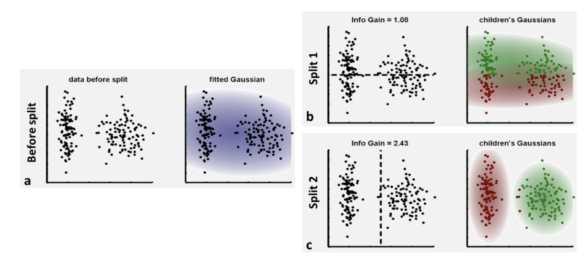